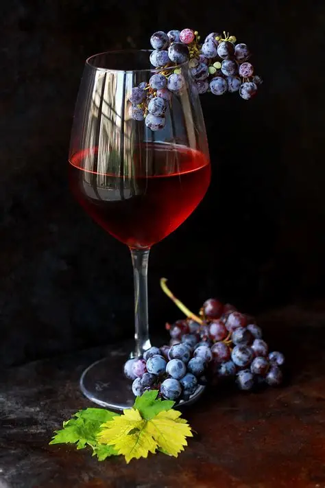

.
Sistema de Avaliação de Estoque e Tendência de Vinhos
Fundada em São Paulo há mais de 15 anos, a Vinheria Agnello é uma empresa familiar dirigida pelo proprietário Giulio e sua filha Bianca. Contando com uma loja física que dispõe de uma vasta gama de rótulos nacionais e internacionais, a empresa emprega seis funcionários distribuídos entre administração, estoque e vendas. Tanto os proprietários quanto seus três vendedores são profundos conhecedores do mundo dos vinhos, utilizando esse saber no atendimento aos clientes. Essa troca de conhecimento, com caráter de consultoria, é um dos principais pontos fortes da vinheria.

Cadastre-se
Contate-nos para saber mais
Desenvolvedores
Anna Giazzi | anagazzio@smartStudy.com | RM: 569846
Giulia Stella | giuliastella@smartStudy.com | RM: 568888
Cadastrar Vinho
Clique abaixo para iniciar o cadastro via prompt.